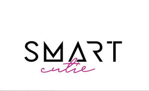

Trade Mark Journal No.2025/032 8 August 2025
UK00004239855 26 July 2025 (3,16,21,23,26,28,31)

- Class 3
- Cosmetics; Skincare cosmetics; Moisturisers [cosmetics]; Cosmetics and cosmetic preparations; Hair cosmetics; Skin fresheners [cosmetics]; Cosmetics for eye-lashes; Cosmetics for suntanning; Anti-aging moisturizers used as cosmetics; Organic cosmetics; Non-medicated cosmetics; Lip cosmetics; Nail cosmetics; Skin moisturizers used as cosmetics; Natural cosmetics; Cosmetics preparations; Mousses [cosmetics]; Make-up palettes containing cosmetics; Tanning gels [cosmetics]; Cosmetics in the form of lotions; Tanning oils [cosmetics]; Colour cosmetics; Beauty care cosmetics; Facial creams [cosmetics]; Self-tanning preparations [cosmetics]; Suncare lotions [for cosmetic use]; Cosmetics for animals; Tanning preparations [cosmetics]; Decorative cosmetics; Eyebrow cosmetics; Multifunctional cosmetics; Milks [cosmetics]; Eye cosmetics; Body creams [cosmetics]; After-sun oils [cosmetics]; Skin masks [cosmetics]; Cosmetics for eye-brows; Tanning milks [cosmetics]; Functional cosmetics; Facial gels [cosmetics]; Suntan oils [cosmetics]; Skin care cosmetics; Fluid creams [cosmetics]; Suntan lotion [cosmetics]; Cosmetics for children; Non-medicated cosmetics and toiletry preparations; Humectant preparations [cosmetics]; Emollient preparations [cosmetics]; Cosmetics in the form of creams; Powder compacts [cosmetics]; Sun-tanning preparations [cosmetics]; Cosmetic hair lotions; Suntanning oil [cosmetics]; Colour cosmetics for the skin; After-sun milks [cosmetics]; After-sun milk [cosmetics]; Cosmetics for use on the skin; Cosmetic moisturisers; Sunscreens [for cosmetic use]; Cosmetic creams and lotions; Bath powder [cosmetics]; Night creams [cosmetics]; Skin recovery creams [cosmetics]; Body gels [cosmetics]; Sun blocking lipsticks [cosmetics]; Cosmetic products in the form of aerosols for skincare; Cosmetics for the use on the hair; Body and facial creams [cosmetics]; Lip stains [cosmetics]; Sunscreen creams [for cosmetic use]; Sunscreen [for cosmetic use]; Body care cosmetics; Creams (Cosmetic -); Cosmetic creams; Cosmetic soaps; Cosmetics containing keratin; Cosmetic skin fresheners; Cosmetics in the form of powders; Hair care lotions [for cosmetic use]; Dyes (Cosmetic -); Cosmetic dyes; After-sun lotions [for cosmetic use]; Beauty lotions; Cosmetics containing panthenol; Cosmetics in the form of oils; Facial lotions [cosmetic]; Cosmetic facial lotions; Cosmetic suntan lotions; Nail paint [cosmetics]; Perfume oils for the manufacture of cosmetic preparations; Skin care lotions [cosmetic]; Colour cosmetics for children; Nail hardeners [cosmetics]; Tissues impregnated with cosmetics; Anti-aging creams [for cosmetic use]; Sun protecting creams [cosmetics]; Nail tips [cosmetics]; Cosmetic products for the shower; Nail primer [cosmetics]; Anti-ageing creams [for cosmetic use]; Smoothing emulsions [cosmetics]; Perfumed powders [for cosmetic use]; Skin cleansers [cosmetic]; Liners [cosmetics] for the eyes; Moisturising skin lotions [cosmetic]; Skin creams [cosmetic]; Skin creams [for cosmetic use]; Cosmetic creams for the skin; Body and facial gels [cosmetics].
- Class 16
- Post cards; Cards; Picture cards; Note cards; Announcement cards; Reference cards; Greetings cards; Invitation cards; Announcement cards [stationery]; Birthday cards; Greeting cards; Printed recipe cards; Anniversary cards; Social note cards; File cards; Paper boxes for storing greeting cards; Gift cards; Christmas cards; Name cards; Advertisement boards of card; Blank note cards; Visiting cards; Occasion cards; Correspondence cards; Paper loyalty cards; Pop-up greetings cards; Printed cards; Holiday cards; Filing cards; Printed mail response cards; Trading cards; Tags for index cards; Flash cards; Printed informational cards; Index cards [stationery]; Trivia cards; Index cards; Motivational cards; Business cards; Card files; Record cards; Place cards; Thank you cards; Gift wrap cards; Blank cards; Scoring cards; Menu cards; Trading cards other than for games; Trading cards, other than for games; Musical greetings cards; Baseball cards; Colour sample cards; Card indexes; Musical greeting cards; Packaging boxes of card.
- Class 21
- Cosmetics brushes; Applicators for cosmetics; Cosmetics applicators; Containers for cosmetics; Dispensers for cosmetics; Racks for cosmetics; Holders for cosmetics; Household utensils; Household containers; Trays [household]; Household gloves; Squeegees [for household use]; Household or kitchen containers; Household or kitchen utensils; Dishes [household utensils]; Graters [household utensils]; Sifters [household utensils]; Glassware for household purposes; Utensils for household purposes; Graters for household purposes; Graters for household use; Loofahs for household purposes; Colanders for household purposes; Colanders for household use; Ceramics for household purposes; Sieves [household utensils]; Nebulizers for household use; Brushes for household purposes; Sponges for household purposes; Baskets for household purposes; Containers for household use; Cages for household pets; Pets (Cages for household -); Strainers for household use; Laundry balls for use as household utensils; Containers for household or kitchen use; Squeegees for household purposes; Buckets for household use; Jars for household use; Laundry bins for household purposes; Non-electric food blenders [for household purposes]; Trays for household purposes; Brushes for household use; Gloves for household purposes; Graters [non-electric household utensils]; Strainers for household purposes; Droppers for household purposes; Blenders, non-electric, for household purposes; Atomisers for household use; Bins for household refuse; Household gloves for cleaning purposes; Scrapers for household purposes; Laundry baskets for household purposes; Laundry sorters for household purposes; Sieves [for household purposes]; Sieves for household purposes; Household containers for storing pet food; Laundry sorters for household use; Non-electric food mixers [for household purposes]; Disposable lids for household containers; All-purpose portable household containers; Dumpling moulds for household use; Food containers for pet animals; Pet feeding dishes; Dog food scoops; Pet feeding bowls; Containers for bird food; Litter trays for pet animals; Pet feeding and drinking bowls; Pet drinking bowls; Plastic containers for dispensing food to pets; Litter scoops for use with pet animals; Brushes for grooming pet animals; Electronic pet feeders.
- Class 23
- Haberdashery [thread]; Sewing yarns; Sewing yarn; Sewing thread and yarn; Textile yarns; Sewing thread for textile use; Embroidery yarn; Threads and yarns [for textile use]; Woollen thread and yarn; Yarns (Elastic -), for use in textiles.
- Class 26
- Haberdashery; Eyelets [haberdashery]; Tassels [haberdashery]; Ribbons [haberdashery]; Haberdashery ribbons; Haberdashery bows; Rosettes [haberdashery]; Appliqués [haberdashery]; Hooks [haberdashery]; Fabric appliques [haberdashery]; Fittings for lingerie [haberdashery]; Paper bows [haberdashery]; Paper ribbons [haberdashery]; Haberdashery, except thread; Beads other than for making jewelry [haberdashery]; Patches (Heat adhesive -) for decoration of textile articles [haberdashery]; Heat adhesive patches for decoration of textile articles [haberdashery]; Decoration of textile articles (Heat adhesive patches for -) [haberdashery]; Haberdashery [dressmakers' articles], except thread; Elastic for use in dressmaking; Sewing thimbles; Thimbles (Sewing -); Brooches for clothing; Spangles for clothing; Brooches [clothing accessories]; Fancy goods [embroidery]; Eyelets for clothing; Clothing (Eyelets for -); Passementerie; Trimmings for clothing; Embroidery for garments; Tinsels [trimmings for clothing].
- Class 28
- Tarot cards [playing cards]; Trading cards [card game]; Playing cards and card games; Game cards; Bingo cards; Cards (Bingo -); Cards [games]; Card games; Playing cards; Cards (Playing -); Trading cards for games; Lottery cards; Trading card games; Karuta playing cards (Japanese card game); Cases for playing cards; Game boards for trading card games; Playing card cases; Toy food; Pet toys; Toys for pet animals; Toys; Toys, games, and playthings; Toys and playthings for pets; Ride-on toys; Cuddly toys; Puzzles [toys]; Toys for sandpits; Stuffed toys; Plush toys; Inflatable toys; Toys for babies; Noisemakers [toys]; Toys for pets; Fidget toys; Wind-up toys; Toys for use in perambulators; Radio-controlled toys; Plastic toys; Scooters [toys]; Crib toys; Toys for animals; Mobiles [toys]; Toys, games and playthings for pet animals; Windup toys; Rattles [toys]; Toys for cats; Toys for infants; Model cars [toys or playthings]; Wooden toys; Toys and playthings for pet animals; Toys for dogs; Toy dolls; Educational toys; Bendable toys; Outdoor toys; Toy playsets; Models being toys; Bath toys; Infant toys; Dog toys; Sandbox toys; Bathtub toys; Action figures [toys or playthings]; Electronic toys; Whistles [toys]; Sand toys; Inflatable ride-on toys; Controllers for toys; Soft toys; Miniature car models [toys or playthings]; Bouncing toys; Drones [toys]; Cloth toys; Musical toys; Tricycles for infants [toys]; Toy figurines; Toy furniture; Toys for birds; Mechanical toys; Play mats for use with toy vehicles [playthings]; Wheeled toys; Clockwork toys; Developmental toys; Crib mobiles [toys]; Plastic toys for use in the bath; Stuffed animals [toys]; Fluffy toys; Inflatable bath toys; Rocking toys; Stacking toys; Fabric toys; Plastic models being toys; Water toys; Modular toys; Model toys; Whack-a-mole toys for pets; Play mats incorporating infant toys [playthings]; Drawing toys; Toy prams; Action toys; Stuffed and plush toys; Stuffed plush toys; Plush stuffed toys; Battery-operated action toys; Sketching toys; Children's toys; Toy bicycles; Squeezable squeaking toys; Smart toys; Whistling toys; Toy tableware; Plastic character toys; Construction toys; Clockwork toys [of plastics]; Push toys; Articles of clothing for toys; Toy wheelbarrows; Squeeze toys; Toy bakeware and toy cookware; Talking toys; Bendy balls being toys; Toy xylophones; Toy mobiles; Stuffed bean-filled toys; Clothing for toy figures; Toy animals; Pull toys; Chewing toys for parrots; Toy cars; Toy strollers; Water-squirting toys; Assembly toys; Toy balloons; Toy scooters; Toy hats; Intelligent toys; Punching toys; Music box toys; Toy cookware; Toy harmonicas; Toy automobiles; Toy robots; Smart plush toys; Toy tools; Toy weapons; Toys in the form of puzzles; Xylophones being musical toys; Novelty toys for parties; Soft sculpture toys; Toy glockenspiels; Inflatable pool toys; Costumes being childrens playthings; Toy bakeware; Toy pushchairs; Toy balls; Toy airplanes; Puzzle mats [toys]; Money guns being toys; Toy vehicles; Playthings.
- Class 31
- Pet food; Food (Pet -); Pet food for dogs; Pet rabbit food; Pet food for birds; Dog food; Pet foods; Cat food; Pet foodstuffs; Animal food; Food for dogs; Food for cats; Pet beverages; Food for animals; Foodstuffs for pet animals; Hamster food; Food for goldfish; Rabbit food; Dog foods; Pet animals; Food for hamsters; Bird food; Stall food for animals; Food for racing dogs; Pet foods in the form of chews; Edible pet treats; Food preparations for dogs; Food preparations for cats; Edible food for animals for chewing; Food for rodents; Fish food; Food for fish; Food products for animals; Food for birds; Oat-based food for animals; Cattle food; Pet birds; Food for aquarium fish; Beverages for pets; Edible silvervine powder for pet cats; Foods flavoured with chicken for feeding cats; Fish meal [animal feed]; Foods flavoured with chicken for feeding dogs; Fish meal for animal consumption; Canned foods for dogs; Foods containing chicken for feeding dogs; Foodstuff for dogs; Wheat proteins for animal food; Foods flavoured with beef for feeding cats; Foods flavoured with beef for feeding dogs; Animal beverages; Cereals preparations being food for animals.
SVETLANA EFREMOVA